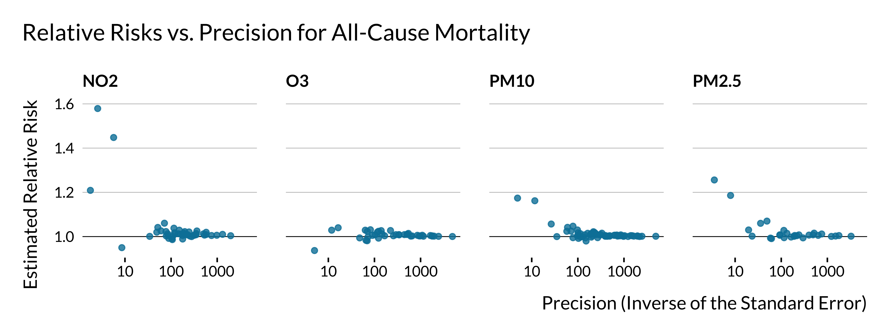
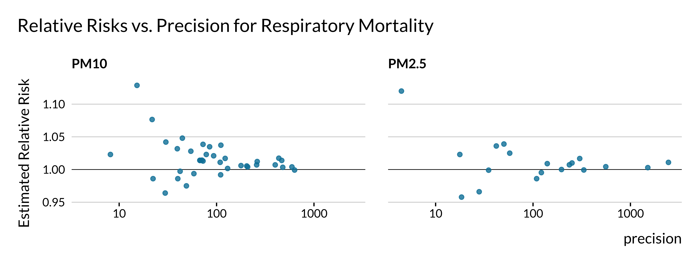
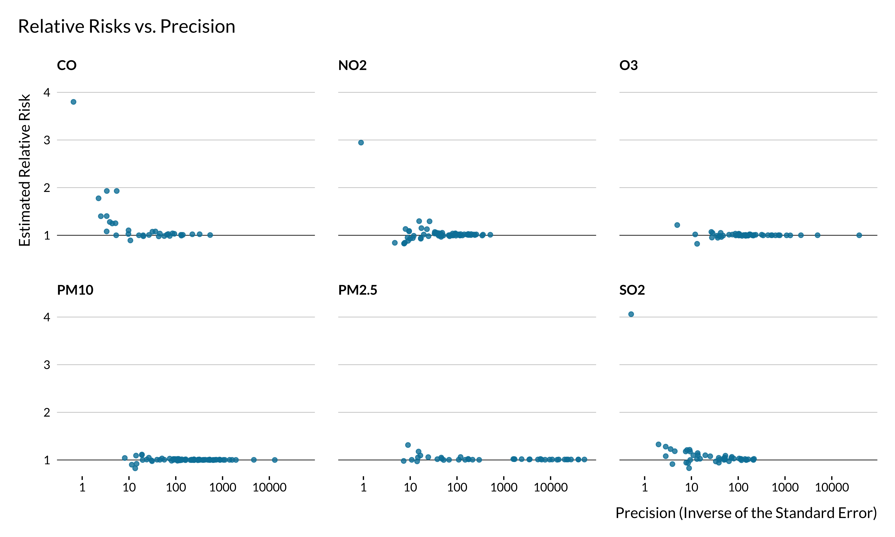
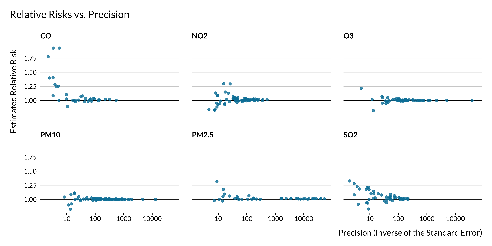
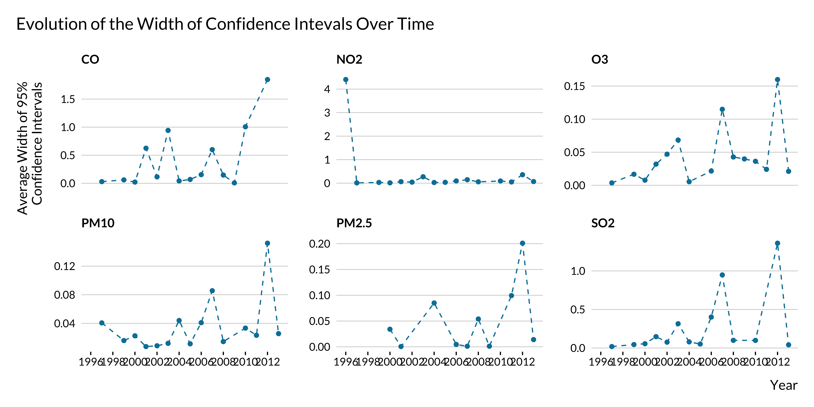

Purpose of the document
One of our objectives in this paper is to evaluate whether the literature of short terms health effects of air pollution suffers from power and type M error issues. In this document, we carry out part of this analysis. We retrieved most of the estimates and confidence intervals of the literature in another document. To do so, using REGular EXPressions (regex), we took advantage of a somehow standardized reporting mechanism of point estimates and confidence intervals in the abstracts. The set of articles studied in details here is therefore limited to articles displaying confidence intervals and point estimates in their abstracts. This convention is not shared by all disciplines. For instance, it is not common practice in economics but much more common in the epidemiology literature. This analysis thus focuses on a selected sample of the literature.
In the present document, we first explore the characteristics of the articles considered. Since we only retrieve effects for a subset of papers, we assess whether these papers are representative of the whole literature. We find that they mostly are. We then briefly explore the effects retrieved before carrying out the actual power analysis, implementing sensitivity tests to compute power, type M and type S error. Our findings suggest important heterogeneity in this literature. Some papers do not seem to present major problems while others seem to suffer from severe power issues. We therefore explore potential sources for this heterogeneity.
Key findings and graphs are presented in the conclusion section of the present document. This section has been built to be read and understood independently. Readers who are only interested in the key findings are invited to jump straight to this section.
Articles characteristics
Before diving into the power analysis itself, we look at the characteristics of the articles considered.
We retrieved the articles from PubMed and Scopus using the following query on May 18, 2021:
‘TITLE((“air pollution” OR “air quality” OR “particulate matter” OR ozone OR “nitrogen dioxide” OR “sulfur dioxide” OR “PM10” OR “PM2.5” OR “carbon dioxide” OR “carbon monoxide”) AND (“emergency” OR “mortality” OR “stroke” OR “cerebrovascular” OR “cardiovascular” OR “death” OR “hospitalization”) AND NOT (“long term” OR “long-term”)) AND “short term”’
This query enables us to retrieve 1834 valid abstracts.
Themes
We can briefly explore the main (unsurprising) themes of the articles:


Detection of effects
Out of the 1834 valid articles returned by the query, only a fraction reports estimates and confidence intervals in their abstracts. We therefore do not retrieve effects for all the articles returned by the query, mostly for the reason aforementioned. This might create some selection, making the sample of articles studied not representative of the whole literature. We investigate further the difference between articles that do and do not report confidence intervals in their abstracts in the following section.
Here is a list of the valid articles. The last column shows whether at least one effect was retrieved for this article.
In total, we detect 2666 valid effects and associated confidence intervals. We retrieve estimates for most of the articles mentioning “confidence interval” in some form in the abstract:
| Effect retreived | Number of articles | Proportion |
|---|---|---|
| Yes | 784 | 0.8769575 |
| No | 110 | 0.1230425 |
Note that a bunch of abstracts contain the phrase “CI” without actually displaying effects and confidence intervals. Our algorithm seems to make a reasonably good job at detecting effects and CI when they are indeed displayed in an abstract. In addition, there is no reason to think that our ability to detect an effect would be correlated with power issues in the paper. Hence, we feel rather confident assuming that our detection algorithm selects a random (along our dimension of interest) sample of estimates among all estimates displayed in abstracts.
Representativity of articles for which an effect was retrieved
In this subsection, we investigate whether there are systematic differences between articles for which we retrieved an effect and articles that do not display an effect in their abstract or for which we did not detect one. We build this analysis such that it also provides general information about the entire set of articles.
Qualitative random analysis
First of all, we skim through a bunch of abstracts for which we retrieve an effect or not to see whether there are clear differences across study subsets.
First of all, we notice that we did not select some papers displaying effects in their abstracts because they do not mention confidence intervals. We need standard errors to compute power, type M and type S error, hence why we did not select these papers. A small part of them seem to however mention p-values. We could have build on this to increase slightly our set of articles considered but it would not have drastically increased the set of articles considered. As discussed previously, we also acknowledge that our algorithm fails to detect a small share of otherwise valid estimates.
We then noticed that a non negligible share of articles for which we do not detect an effect seem to to be off-topic. Our quick exploration did not show evidence of such an issue in articles for which we detected an effect. This is rather reassuring; we are filtering out non well suited papers.
Finally, part of the studies for which we do not detect an effect are metanalyses (based on a quick regex search, there are about twice has much metanalyses in articles with an effect).
Publication date
Getting back to our automatic analysis, we first look into the distribution of published articles on this topic in time. We also wonder whether displaying effects in the abstract was a particular feature of a given period.

First, we notice that the number of articles published on short-term health effects of air pollution has been increasing rather strongly since the 1980s. The first article for which an effect is detected was published in 1992. We only found 12 articles published before 1992. This can be explained by the fact that, in most places, air pollution has only been measured consistently since the 1990s.
Even though there are slightly more recent (2010-2020) articles for which effects are retrieved, the difference does not seem to be substantial. Distributions of articles for which an effect has been retrieved and not are rather similar.
Journal and fields
We then look into the journals and academic fields in which articles on short term health effect of air pollution have been published. The results by journals are rather messy so we focus on journal areas and subareas.


Most papers on this topic have been, unsurprisingly, published in multidisciplinary journals, health or physical science journals.
One may notice that effects are not retrieved, ie not reported in the abstract or not detected, for most papers published in life science and social sciences and humanities. This is probably due to reporting practices peculiar to these fields. This might not be as problematic as they constitute a small share of the sample. There does not seem to be a particularly large imbalance in terms of journal general field for the more represented fields.
Themes
We then wonder if the words used in each sets of abstracts differ between the two sets of articles.

Apart from a few key terms, such as CI, 95 for instance, there are no huge differences in the terms used in both subsets of abstracts. Noticeably, the term “increase” seems to appear more in abstracts where we detect an effect. This is not surprising as these papers often use sentences similar to “a 10 \(\mu g/m^{3}\) increase in PM10 concentration lead to …”.
Pollutant
We then look at the pollutants considered in each article. We consider that a pollutant is studied if it is mentioned in the abstract. It is not an exact measure as some articles may mention pollutants without actually studying them but it remains an interesting metric.

First of all, we notice that a large share of papers considered here study particulate matters (PM2.5, PM10 or both).
It seems that, when the number of papers sudying a given pollutant is large, the likelihood of detecting an effect does not seem to vary much with the type of pollutant. Importantly, the proportion of effects retrieved is much lower for articles for which we are not able to detect the type of pollutants studied.
Outcome
As for pollutants, for some articles, we were able to retrieve studied outcomes depending on the words used in an abstract. We classified them into two categories: mortality and emergency.

Most articles studied here are interested in mortality. The proportion of articles for which an effect is retrieved seems to be larger for papers studying emergency admissions than mortality. There might therefore be some kind of selection issue along this dimension.
Subpopulation
Some articles focus on sub-populations such as infants or elders. When these terms are not mentioned, either the entire population is considered or we are not able to detect the subgroup considered. The number of articles for which a subpopulation is indicated is rather small:
| Subpopulation indicated | Number of articles |
|---|---|
| Yes | 238 |
| No or unknown | 1596 |
Looking more in details into the detection of effects, we get the following pattern:

There does not seem to be large variations in the proportion of articles for which an effect is detected, depending on whether a subpopulation is studied or not. Yet, this proportion is a slightly larger for elders than infants, itself larger than when when no subpopulation is detected.
Number of observations
We then look at the number of observations, the length of the the study period and the number of cities considered. Importantly, we only retrieve this information for a very limited subset of articles.
| Missing | Length of the study | Number of cities | Number of observations |
|---|---|---|---|
| False | 630 | 832 | 375 |
| True | 1204 | 1002 | 1459 |
Our analysis is therefore to be taken with caution as there is a critical lack of information for this category.


We notice that there are large variations in the number of observations in the studies considered. However, there does not seem to be large differences along this dimension on whether an effect is retrieved or not. There seems however to be more studies around 1000 observations and less between 10,000 and 100,000 in articles for which an effect is retrieved. This is explained by the fact effects are retrieved more for studies with rather limited study period (around 3 years).
Summary
The articles for which an effect was detected, unsurprisingly, seem to be slightly different from those for which we did not detect one, based on our quick qualitative analysis. Yet, there does not seem to be important divides along the dimensions studied.
We can thus now dig further into the analysis of the estimates retrieved.
Analysis of the effects
In this section, we briefly analyze the effects retrieved, their statistical significance and their precision.
Significance
First, we notice that most of the effects retrieved here are significant (at the usual 5% threshold).
| Significant | Number of effects | Proportion |
|---|---|---|
| No | 167 | 0.0626407 |
| Yes | 2499 | 0.9373593 |
Researchers mention their key findings in the abstract and therefore probably do not report in their abstracts non statistically significant estimates for which the null hypothesis of no effect cannot be rejected. Only a very small proportion of articles do not report any statistically significant estimates in their abstract:
| At least one significant estimate | Number of articles | Proportion |
|---|---|---|
| No | 12 | 0.0147239 |
| Yes | 803 | 0.9852761 |
T-scores
We then look into the distribution of the t-scores.

There seems to be some sort of bunching for t-scores above 1.96. In this analysis, we only consider estimates reported in the abstracts. Authors may only report significant estimates in their abstracts even though they also report non significant estimates in the body of the article. This might explain this bunching. We need to investigate this further in order to understand whether this bunching is evidence of publication bias. To do so, we could reproduce the present analysis but analyze the full texts and not only on the abstracts. Other techniques could be used to analyze reporting bias but are not available to us, considering the lack on information we have access to using this automatic method.
Signal to noise ratio
We then plot the distribution of the signal to noise ratio, ie the ratio of the point estimate and the width of the confidence interval.

The graph is of course analogous to the previous one. It however underlines that in a large share of the studies, the magnitude of the noise is larger than the magnitude of the effect. We then look into the distribution of the signal to noise ratio in more details.
| Signal to noise ratio | Percentage of estimates with a lower signal to noise ratio |
|---|---|
| 0.0235294 | 0% |
| 0.5133428 | 10% |
| 0.6129032 | 20% |
| 0.7349456 | 30% |
| 0.9045643 | 40% |
| 1.1627137 | 50% |
| 1.5901639 | 60% |
| 2.7950737 | 70% |
| 6.5294118 | 80% |
| 23.7592495 | 90% |
| 834.8333333 | 100% |
We notice that for about 55% of the estimates considered here, the magnitude of the noise is more important than those of the signal. This is particularly concerning.
Power analysis
We then turn to the power analysis itself. The objective is to evaluate the power, type M and type S errors for each estimate.
To compute these values, we would need to know the true effect size. Yet, true effects are of course unknown. One solution could be to use estimates from the literature and meta-analyses as best guesses for these true values. Yet, in the setting of this automatic literature review, detecting what is exactly measured in each analysis is particularly challenging since there is no standardized way of reporting the results beyond mentioning confidence intervals. One study may for instance claim that a 10 \(\mu g/m^{3}\) increase in PM2.5 concentration is associated with an increase of x% in hospital admissions over the course of a day while another study may state that a 2% increase in ozone concentration increases the number of deaths by 3 over a month. Fortunately, for each estimate retrieved, even though we do not know what is measured, we can evaluate the precision with which it is estimated.
To circumvent the fact that we do not know the actual effect size, we follow a strategy suggested by Gelman and Carlin (2014). We consider a range of potential “true” effect sizes and run a sensitivity analysis. We investigate what would be the power, type M and type S error if the true effect was only a fraction of the measured effect. This enables us to assess whether the design of the study would be good enough to detect a smaller effect. If assuming that the true effect is 3/4 of the measured effect yields a power of 30%, there is probably a major issue with the design of this study. With this design, this (non zero) effect would only be detected 30% of the time.
Of course, there is no reason to think a priori that a given effect would be overestimated. The values for power, type M and type S errors are therefore only informative.
To carry out the analysis, we use the package retrodesign which computes post analysis design calculations (power, type M and type S errors). We run the function retro_desing() for several effect sizes.
In a first part, we investigate whether the literature might be subject to design issues. We analyze the distribution of power, type M and type S errors in the whole set of abstracts, how they evolve jointly or along several variables such as the size of the true effect. We find clear evidence of heterogeneity across articles. Some of them seem to present robust designs while others seem much more problematic, yielding low power and high rates of type M error, even for large hypothesized true effect sizes. Thus, in a second part, we investigate potential sources of heterogeneity.
Graphical analysis
We first explore graphically the distribution of power, type M and type S error across simulations and for different magnitudes of the true effect.


A large chunk of articles display high power and low rates of type M and type S error, in each robustness check. This is reassuring: a good chunk of the literature does not seem to suffer from low power issues! Type S error does not seem to be an important issue in this literature. However, a non negligible number of articles display low power and/or some evidence of type M error.
Note that for type M errors, due to some outliers, we used a log scale. Without this log scale and restricting our sample to type M errors lower than 2.5, we get the following graph:

We find that, even if the measured effect was close to the true effect, for a good chunk of articles, there would be a substantial risk of type M error. That means that, replicating each of these studies would yield, on average, a smaller effect than the reported one.
Alternatively, we can also look at what would be the power, type M and type S if the true effect was equal to the lower bound of the confidence interval. This metric may exacerbate design issues for imprecise estimates. Such estimates would be “penalized” twice for being imprecise: they have a large standard error and the hypothesized true effect would be very small. Yet, this metric remains interesting as confidence intervals describe credible effect sizes. If the effect size is smaller but still credible, would the design be good enough to “detect” it?

Unsurprisingly, the conclusions remain similar: most articles do not seems to suffer from power issues but a non negligible chunk of articles does.
Table
We then look more precisely at actual numbers, looking at the median and mean power, type M and type S errors for different true effect sizes.
| Mean | Median | Mean | Median | Mean | Median | |
|---|---|---|---|---|---|---|
| 1% of the measured effect | 0.1098429 | 0.0502380 | 68.736056 | 51.305715 | 0.3610377 | 0.4469236 |
| 5% of the measured effect | 0.2185136 | 0.0559704 | 13.891964 | 10.322415 | 0.2133374 | 0.2562077 |
| 10% of the measured effect | 0.2854514 | 0.0741190 | 7.088445 | 5.236283 | 0.1257028 | 0.1059307 |
| 33% of the measured effect | 0.4947949 | 0.3245051 | 2.436112 | 1.737081 | 0.0197135 | 0.0008199 |
| 50% of the measured effect | 0.6170604 | 0.6251308 | 1.788413 | 1.266145 | 0.0087967 | 0.0000180 |
| 67% of the measured effect | 0.7176892 | 0.8629759 | 1.490592 | 1.083232 | 0.0053314 | 0.0000003 |
| 75% of the measured effect | 0.7572823 | 0.9276366 | 1.403188 | 1.043436 | 0.0044629 | 0.0000000 |
| 90% of the measured effect | 0.8189661 | 0.9839067 | 1.288970 | 1.009967 | 0.0033833 | 0.0000000 |
| 100% of the measured effect | 0.8517684 | 0.9953098 | 1.236439 | 1.003011 | 0.0028919 | 0.0000000 |
| Lower bound of the CI | 0.6176972 | 0.8309933 | 5.607090 | 1.103965 | 0.0448271 | 0.0000006 |
ECDF
Empirical Cumulative Distribution Functions (ECDFs) provide a broader perspective on these metrics. They inform us of the share of articles for which power, type M or S errors are below a given threshold.


We notice that about 40% of estimates would not reach the conventional 80% statistical power level if the true effect is 3/4 the size of the measured effect. This is rather concerning.
For ECDFs too we look at what would be the power, type M and type S error if the true effect was equal to the lower bound of the confidence interval or to the estimated effect.


This might be rather concerning: even if the true effect was equal to the estimated effect (and only considering statistically significant estimates), 22.2992254% of the estimates would not reach the conventional a 80% power threshold. This is rather concerning since, due to type M error, significant estimates likely over-estimate on average the true effects. Indeed, the median type M for these estimates is 1.2501204. Considering that the true effect is equal to the estimated effect is therefore very conservative. If we assume that the true effect is equal to 3/4 of the measured effect (which is still rather conservative), the proportion of significant estimates not reaching the 80% power conventional threshold is still as high as 37.3420302%
Link between power, type M and type S error
We then look how type M and type S error evolve with power for the estimates considered.


There is a one-to-one relationship between power and type M and type S error. Not surprisingly, type M and type S errors skyrocket in studies with low power. Restricting the sample to a maximum type M of 4, we notice how quickly type M error rises when power decreases. In general, and not restricting ourselves to this literature, type M error starts becoming a preoccupying issue even for rather high values of power. Unfortunately, there is no conventional limit for which type M error is considered to be problematic. We should probably define one. Interestingly, when power is equal to the conventional 80% threshold, type M error is around 1.125.

Design calculations and effect size
We then investigate how average power, type M and type S evolve as a proportion of the true effect size.


Power decreases and type M and type S errors skyrocket for small values of the true effect (as a proportion of the measured effect). In addition, the average power in the literature would be lower than 80% in the true effect was about 0.85 the measured effect for each study. This is rather preoccupying since, if the true effect was about 0.85 the measured effect for each study, on average, effect would be overestimated by more than 30%. Type S error only seems to be an issue for very small values of the true effect as a portion of the measured effect. Type M error seems to be more consistently problematic. The shoot up in the previous graph makes it difficult to read the values of type M error when the true effect is not a small portion of the measured effect. We therefore zoom in.

We notice that, on average in the literature, the treatment effects are overestimated, even for large values of the true effect. This result might be linked to some outliers. We thus look at the evolution of the median power and type M with true effect size.


The issue is much less important when looking at the median. This also highlights the presence of heterogeneity in terms of power in the literature. It is likely that some papers suffer from important issues and drive up the mean while others are not to prone to this type of issues.
To confirm that, we look into the evolution of the distribution of power and type M error with the proportion of effect size.


The overall distribution of power may seem surprising: for “large” effect sizes, the power of most studies is high while it suddenly shifts to very low as effect size decreases.
Summary
To sum up, the bulk of the estimates in this literature does not seem to suffer from low power and type M error issues. For most estimates, type S error does not seem to be an important issue in this literature. Yet, even if the measured effect was close to the true effect, a non negligible chunk of articles would display low power and a substantial risk of type M error. The power of a large chunk of estimates, at least one quarter of significant ones, might be problematically low. This low power is associated with non negligible type M error. Part of the estimates are thus likely overestimated.
We need to investigate further into the sources of this heterogeneity.
Analysis of the sources of heterogeneity
To simplify and clarify our analysis, we consider that an estimate has low power if its computed power is lower than 80% if the true effect is 3/4 of the measured effect. These numbers are arbitrary. 80% is the threshold usually used in power analyses and 3/4 is purely arbitrary and could be changed easily in a robustness check. Following this criterion, the number and proportion of estimates with low power is as follows:
| Power | Number of estimates | Proportion |
|---|---|---|
| Adequate power | 1537 | 0.5765191 |
| Low power | 1129 | 0.4234809 |
Based this criterion, the number of studies with low power is concernedly high.
Such articles are also associated with large type M errors:
| Power | Mean type M | Median type M |
|---|---|---|
| Adequate power | 1.013800 | 1.000000 |
| Low power | 1.933293 | 1.469107 |
We investigate the particularities of articles with seemingly low power. We basically reproduce the same analyses as the ones used to compare articles for which we retrieved an effect or not.
Publication date
First, we look into the evolution of the proportion of articles with low power with publication dates.

The proportion of articles with low power does not seem to have drastically evolved in time. One may have expected that this proportion would have decreased in time as researchers have access to more and more data, computational power and as estimation methods improve.
We can also look more generally at how power, type M and type S error evolved in time.


There does not seem to be a clear trend in the evolution of power and type S error. However, type M error seems to increase slightly in time. This is rather concerning. One may potentially explain that by the fact that the literature is chasing smaller and smaller effects, leading to more type M error. This hypothesis is however difficult to verify since the effects we retrieved are not standardized, as mentioned previously.
Carrying out an analysis by quantile clearly shows that this evolution is driven by outliers with vary large type M errors. The yearly maximum type M error rates have increased in recent years.

Journal and fields
We then look into the distribution of articles in journals and fields. We filter out articles from life sciences and social sciences & humanities journals since only a very limited number of articles have been published in such journals.


It seems that articles published in health sciences journals are less prone to power issues than articles published in other types of journals. This is somehow confirmed when looking at more precise subjects: the proportion of articles displaying low power is much lower in medicine journals than in “environment” and “chemistry” journals.
Some of the heterogeneity may come from the leniency of the journals with regards to these issues. Interestingly, not many fields have a very low rate of articles with low power. This might reveal an across the board lack of awareness of power issues. Yet, while our knowledge of the medicine literature is extremely limited, we seem to remember that, when applying for randomized experiments, researchers in medicine have to perform power calculations in order to properly design their study. Some of them therefore pay carefull attention to power issues and this might explain the lower rate of articles with low power in such journals.
Themes
We then investigate whether the themes appearing in the abstracts are different in articles with adequate or low power.

There does not seem to be a clear difference in the terms used in abstracts for articles with low and adequate power. The only noticeable difference, not visible in this graph, is the use of the term “relative”. Articles with low power mention it much less that articles with adequate power. This difference is rather unclear.
Pollutant
We also look into potential disparities in terms of pollutant:

There does not seem to be stark differences by pollutant type. While some differences seem to appear for BC and Air Quality Index, these pollutants are only studied in a limited sample of studies.
Outcome
We then compare the power as a function of the outcome studied (mortality or hospital admissions).

There does not seem to be any heterogeneity along this dimension.
Subpopulation
We then turn to the sub-population studied.

There does not seem to be stark variations along this dimension either.
Number of observations
Finally, we explore the link between power and the number of observations. Remember that, for a lot of articles, we were not able to recover information about the number of observations (number of cities or length of the study). Hence, these results are purely suggestive.


There does not seem to be substantial heterogeneity in terms of number of observations or length of the study period (at least in articles for which we were able to retrieve this information). We may not observe any difference in terms of number of observations because we do not have this information for many studies. We have retrieved more data about the number of cities considered and it seems that more studies with low power only consider one city. The data are imperfect but this result may come from the fact that estimates from studies focusing on one city are likely to be less precise than those from studies focusing on several cities. This would be due to a smaller number of observations.
Summary
We have seem that mean and median power do not seem to have greatly evolved in time but the average type M seems to have increased in time. This pattern seems to be driven by the fact that more and more papers with very large type M errors have been published recently. We have also seen that health science journals seem to be more prone to power issues than other journals. However, there seems to be a shared lack of concern for low power issues across all fields. Finally, we did not find evidence of obvious heterogeneity in outcome, pollutant or sub-population studied but noticed that more studies with low power only seem to be considering only one city.
Conclusion and summary
In this document, we analyze the statistical power and inference properties of the literature on short term health effects of air pollution. To do so, we retrieved 2666 valid estimates from abstracts of this literature. This sample of estimates is likely rather representative of the whole set of estimates in abstracts of this literature.
Our results are both reassuring and worrying. A large chunk of the estimates in this literature does not seem to suffer from low power and type M error issues. Yet, even if the measured effect was close to the true effect, a non negligible chunk of articles would display low power and a substantial risk of type M error. Type S error does not seem to be an important issue in this literature. The following graphs summarise part of this information:


About 40% of estimates would not reach the conventional 80% statistical power level threshold if the true effect is 3/4 the size of the measured effect. If for all studies, the true effect was 3/4 of the measured effect, the mean type M would be about 1.4. Again, this average hides a lot of heterogeneity. For the 40% of estimates with low power mentioned above, the average type M is 1.93, the median is 1.47.
We then investigated the sources of heterogeneity. Concernedly, we find that in recent years, more and more articles display very large type M errors. In addition, health science journals seem to be more prone to power issues than other journals. However, there seems to be a shared lack of concern for low power issues across all fields. Finally, we did not find evidence of obvious heterogeneity in outcome, pollutant or sub-population studied but noticed that more studies with low power only seem to be considering only one city.